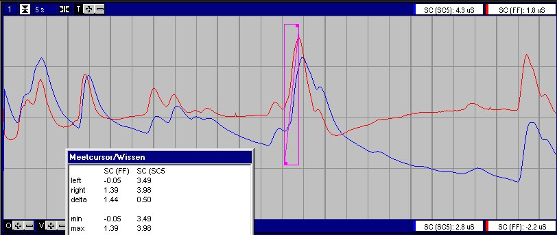

Er wordt eigenlijk nooit de huidweerstand gemeten maar enkel de reciproke waarde hiervan oftewel de huidgeleiding (Skin Conductance = SC), uitgedrukt in de eenheid Siemen.
In het algemeen wordt verondersteld dat de SC bestaat uit twee te onderscheiden componenten:
It's assumed that the sympathetic nervous system, controls the sweet glands and therefor the SC.
Others suggest correlation between the cardio-vascular system (which ofcourse is also affected by the sympathetic nerve system) and SC.
Het FysioFlex systeem is in staat middels de standaard ExG versterker en een eenvoudige interface kabel SC te meten.
Het meest gebruikt is de methode voor het meten van de SC is de constante spanningsmethode (Venables en Lykken), waarbij een DC spanning van 0.5 Volt wordt aangelegd over de electroden. Deze methode wordt ook gebruikt in de FysioFlex.
Andere methoden zijn constante DC stroom en laagfrequente (<100 Hz) AC spanning en stroom.
|
R3 = 2k2 R2 = 513 R4 = 100k R1 = 1k |
|
Kalibratie met 2 weerstanden op 1uS (1MOhm) en 100 uS (10 kOhm). |
Oude Doc hieronder
|
SCL+SCR (DC-measurement) |
ExG in 20 mVtt / DC |
|
Meetmethode MeetBereik Resolutie Nauwkeurigheid High Frequency Cutoff |
constant DC 0.5Volt 0 ... 100 uS 0.025 uS 0.025 uS ..software |
|
SCR only (AC-measurement) |
ExG in 2 mVtt / AC-10sec |
|
Meetmethode MeetBereik (delta SC) Resolutie Nauwkeurigheid Low Frequency cutoff High Frequency cutoff |
constant DC 0.5Volt -5 ... +5 uS 0.0025 uS 0.0025 uS .. .. |
Voor een vergelijking wordt met de SC5 met de bijgeleverde electroden op de linkerhand gemeten en met de FysioFlex op de rechterhand.
Bij de SC5 zijn electrode geleverd met een diameter van 10 mm (volgens de fabrikant Ag/AgCl, ik vond dat ze wel heel erg glimde voor Ag/AgCl) bij FysioFlex standaard Ag/AgCl electroden van 6 mm doorsnede. In beide gevallen is gebruik gemaakt van 0.05 M NaCl pasta. Er is geen gebruik gemaakt van dubbelzijdige plakkers, fixatie met tape was dusdanig goed, dat duwen en trekken aan de electrode geen artefacten te zien gaf.
Hieronder een opname bij een medewerker van de afdeling Psychiatrie, waarbij de SCR het gevolg zijn van de antwoorden op alledaagse vragen. Opmerkelijk is dat de FysioFlex een 4 maal hoger signaal laat zien, terwijl de electroden 3 maal kleiner zijn. Het bovenste plaatje is met de FysioFlex in de DC stand, het onderste plaatje is met de FysioFlec in de AC-stand.


|
In het algemeen worden gewone Ag/AgCl cups gebruikt, in een enkel geval droge goud-electroden. Als geleidingspasta wordt gebruik gemaakt van K-Y Jelly, 0.5% KCl, 0.05 M NaCl. Het belangrijkste hierbij schijnt te zijn dat de pasta neutraal t.o.v. de huid (in het bijzonder de zweetklieren) moet zijn. De aanbevolen bevestiging is dubbelzijdige stikker met gat, vullen met pasta, vastplakken, totaal fixeren met tape, kabels extra fixeren. Indien de dubbelzijdige stickers worden weggelaten, hoeft de pasta niet zo nauwkeurig aangebracht te worden en de eerste resultaten leken erg goed. Na bevestiging dient minimaal 10 minuten (voor absolute metingen 20 minuten) gewacht te worden om een stabiele uitlezing te verkrijgen. |
|
|
SC |
Skin Conductance = SCR + SCL |
|
SCR |
Skin Conductance Respons = snelle positive transients = fazische component |
|
SCL |
Skin Conductance Level = basaal nivo = tonische component |
|
|
|
|
EDA |
ElectroDermal Activity |
|
|
|
|
GSR |
Galvanic Skin Respons |
|
|
|
|
|
|
|
|
|
De volgende onderzoekers worden telkens weer aangehaald Venables, P.H.
Lykken, D.T.
Fowles, D.C.
Edelberg, R.
Martin Schiller
"Grundlagen der Elektrodermalen Aktivitä"
Degelijke uitleg over EDA en algoritme voor het onderscheiden van spontane SCR en gestimuleerde SCR
Westmead Hospital, Westmead NSW 2145, Australia
SCORES is a new software package to analyse electrodermal activity (reflecting arousal and orienting). Overlapping skin
conductance responses (SCR) and quantification of skin conductance level (SCL) is automatically achieved.
Nichele Allen-Cauthen
An Evaluation of Three Hydrophylic Ointments in Skin Conductance Monitoring
Overzicht parameters, met voor en nadelen
Michael Gasperi
Galvanic Skin Response with Lego Mindstorms
Peter Shepherd
psycho-galvanometer (met poging tot onderbouwing), The Ability Meter 3a
Nokon Heo
Source Perception and Electrodermal Activity
RJL Systems
"Bioelectrical Impedance Science"
Weliswaar spectraal analyse, maar bevat enkele zeer fundamentele basisverkleringen
Zeer deskundige groep, een hoop klikbare referenties
Galvanic Skin Response Measurement Devices, Draft Guidance For 510(K)
Psylab, in het bijzonder de SC5
Affective Computing (MIT media laoratory) or more general or Affective Jewelry
© Copyright Instrumentele Dienst, 2001 SM, last updated 04-07-2001
SM, last updated 04-07-2001